The WAOW Museum
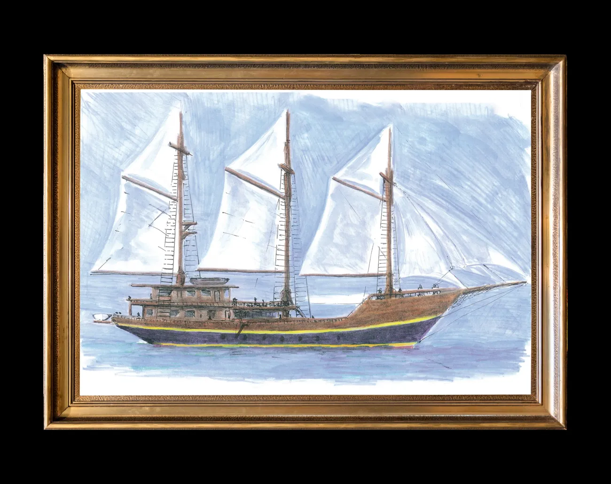
Before WAOW 2, there was WAOW.
A dream drawn on paper.
Four years in the making.
Six years exploring Indonesia.
This is where the WAOW story began.
2012 — 2018
It started with
a dream
WAOW began in the imagination of Michel Deville.
His idea was to create a traditional Indonesian sailing boat
built around one thing he deeply loved: diving.
Michel drew the first plans and surrounded himself with
people who could turn that vision into something real.
What started on paper would become a 60-meter wooden
sailing boat built to explore Indonesia.
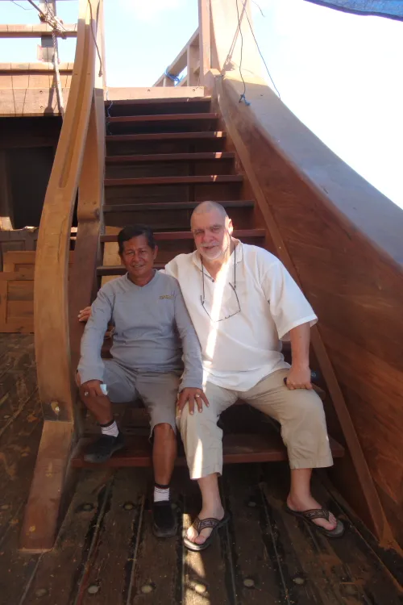
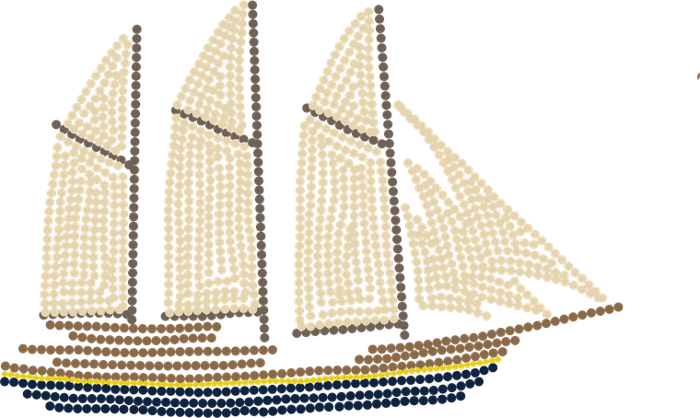
Four years
in the making
WAOW was built over four years by Haji
Wahab and his team of Indonesian
shipwrights, using generations of boatbuilding
knowledge.
Inspired by the Indonesian phinisi and
combined with the lines of a schooner, she
brought together traditional craftsmanship
and a boat designed specifically for long
journeys and diving.
60 metres · 3 masts · 900 m² of sails · 850+
tonnes
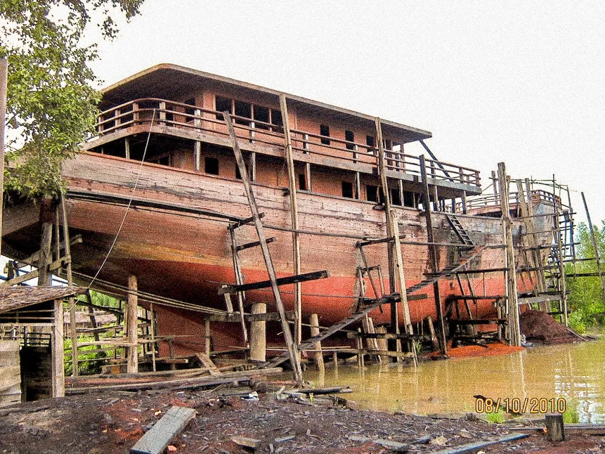
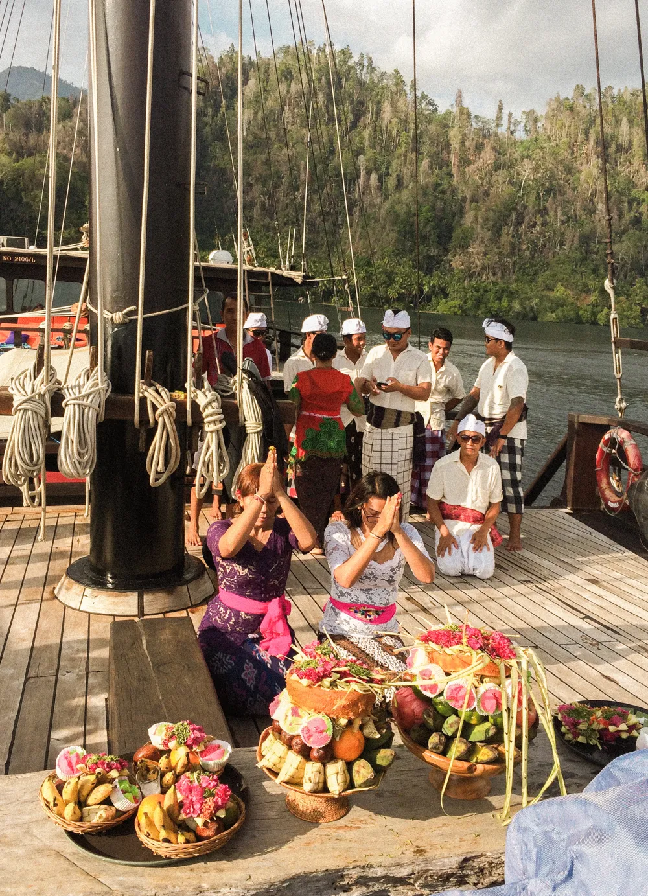
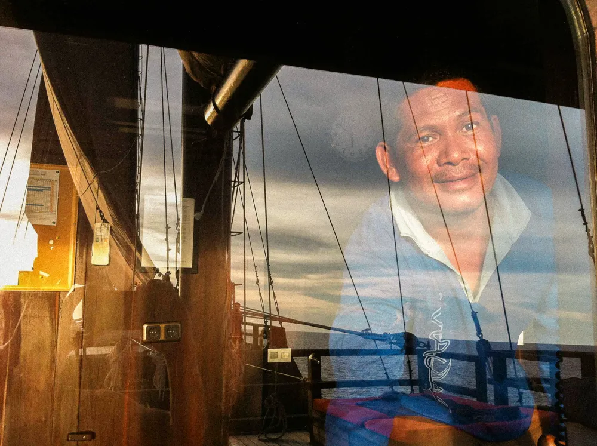
Why “WAOW”?
During the design and construction, one
reaction kept coming back whenever
people discovered the project:
“WAOW.”
The name stayed.
It would later take on another meaning:
WATER ADVENTURE OCEAN WIDE
A name that turned out to fit rather well.
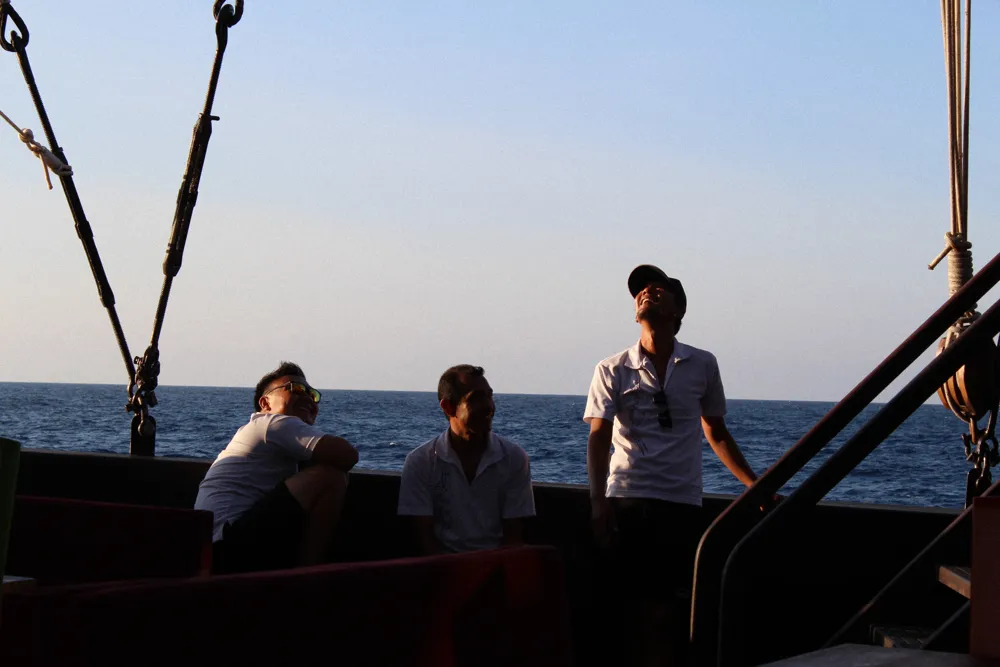
Six years at sea
Indonesia, one journey at a time.
In April 2012, WAOW welcomed her first guests.
Over the years, she sailed through some of Indonesia's most
remote waters — from Komodo and Raja Ampat to the Banda
Sea, Forgotten Islands, Triton Bay, Halmahera, Cenderawasih
and beyond.
Long days underwater.
Thousands of dives.
Countless miles at sea.
And a community that grew with every journey.
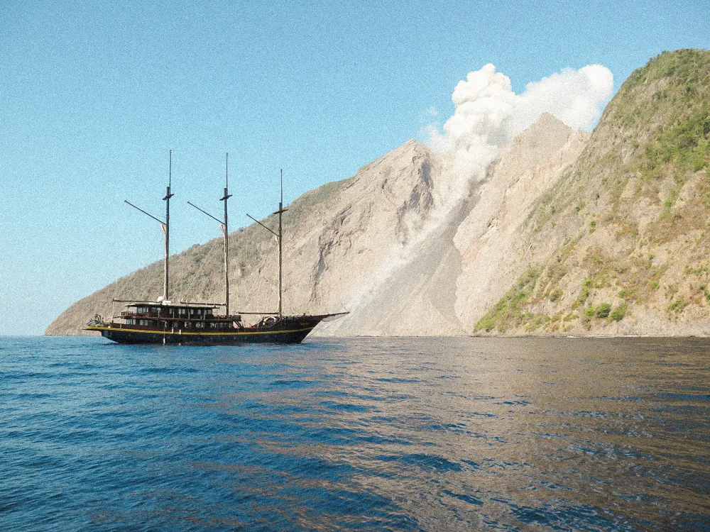
01.02.2018
The day WAOW
was lost
During the night of January 31 to February 1, 2018, WAOW
caught fire while in the port of Biak, Indonesia.
She was lost to the sea.
Everyone on board made it to safety.
The first chapter of WAOW came to an end.
But not the story.
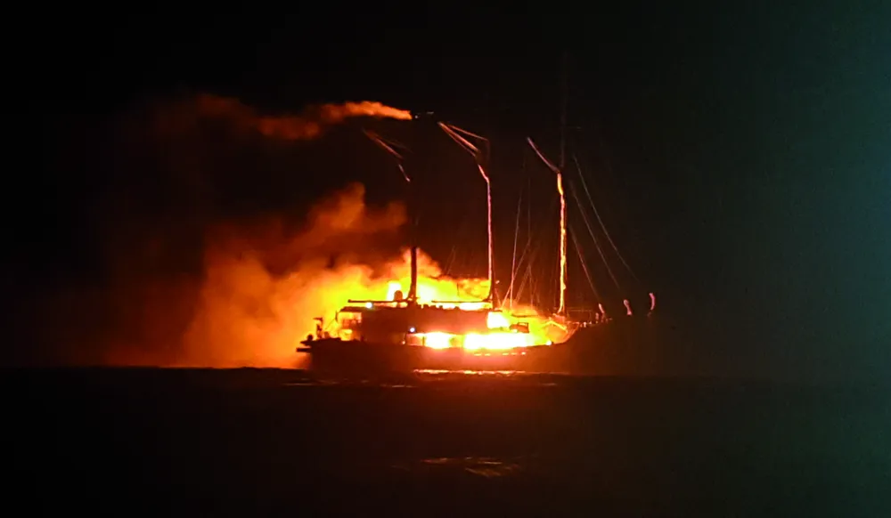
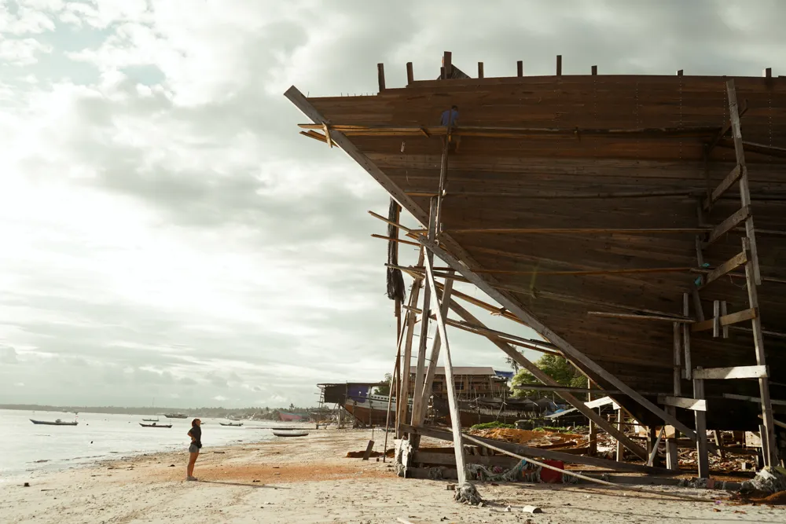
The story wasn't
WAOW lived on in the people who
built her, worked aboard her,
travelled on her and grew up with her.
Years later, that same spirit would
return to the shipyard.
Not to rebuild WAOW.
But to begin the next chapter.
WAOW 2.
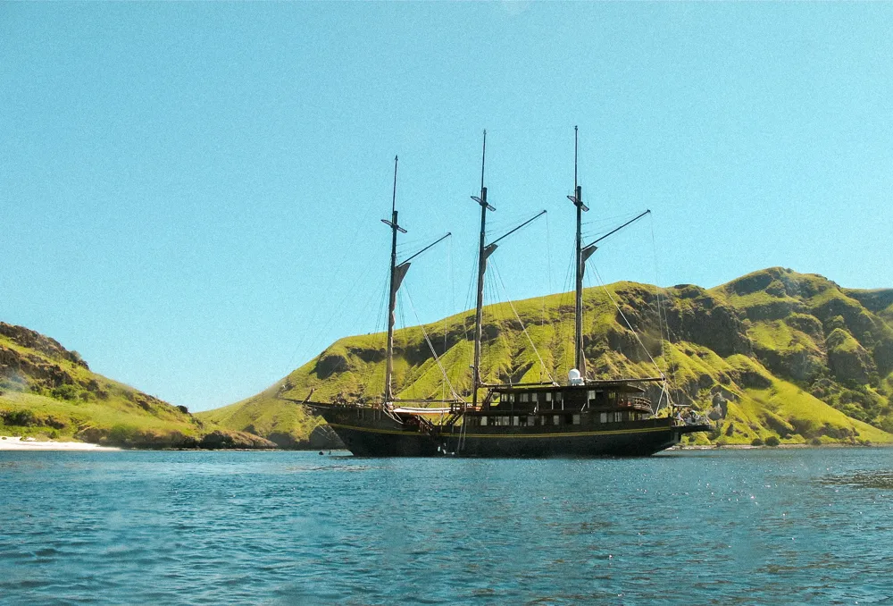
Stories
For years, WAOW took divers across Indonesia, from Raja Ampat to Komodo, the Banda Sea and beyond.
The boat may now be part of the story, but the memories remain.
A few words from the people who experienced it for themselves.
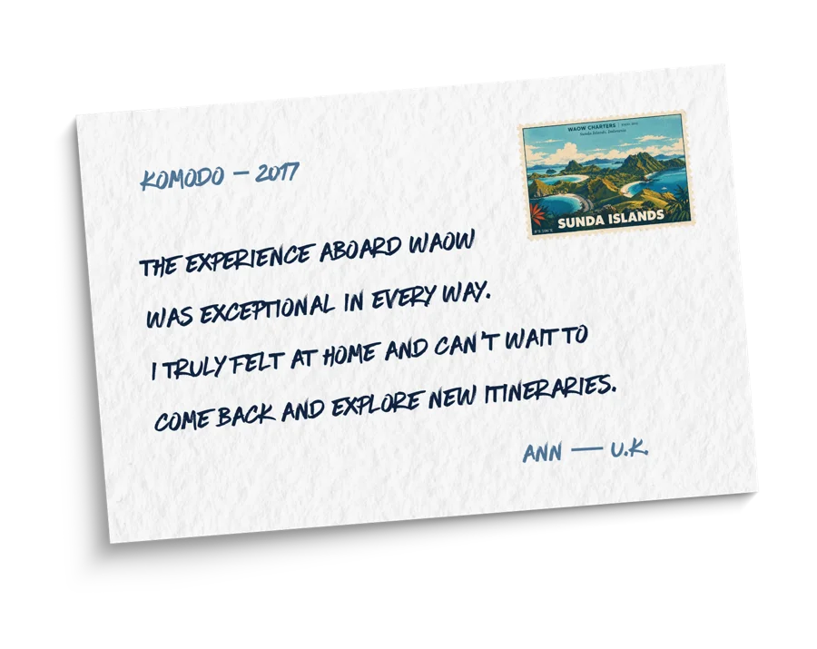
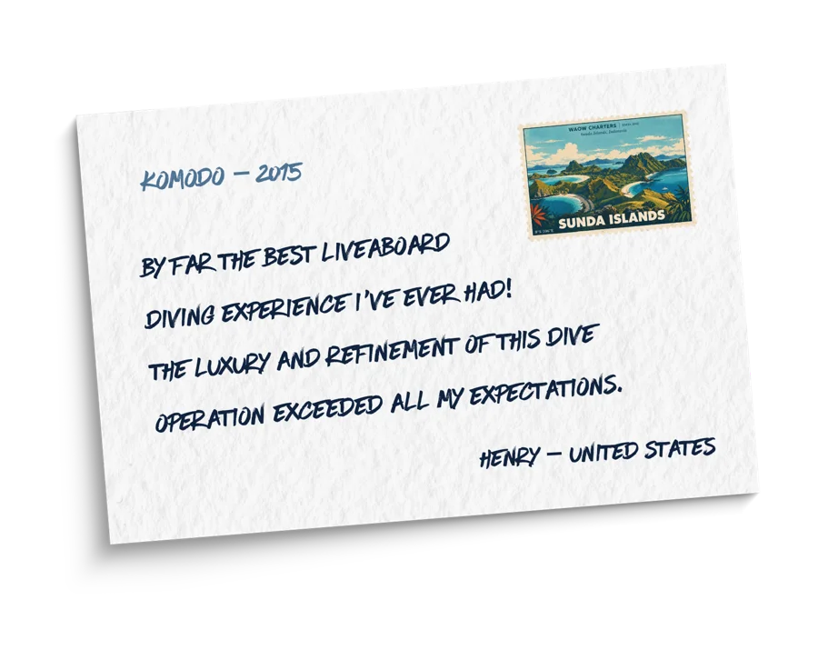
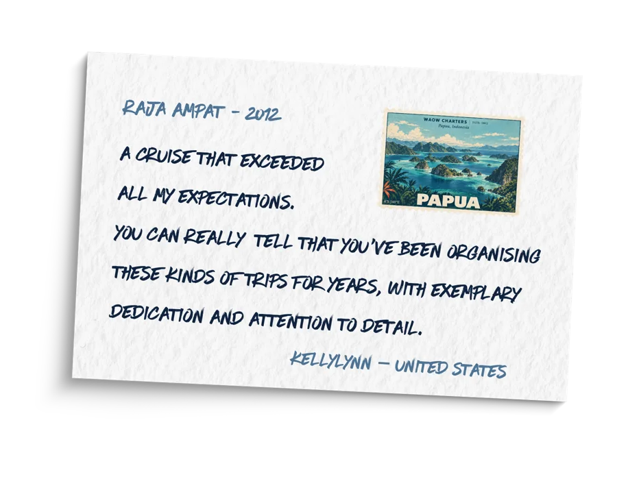